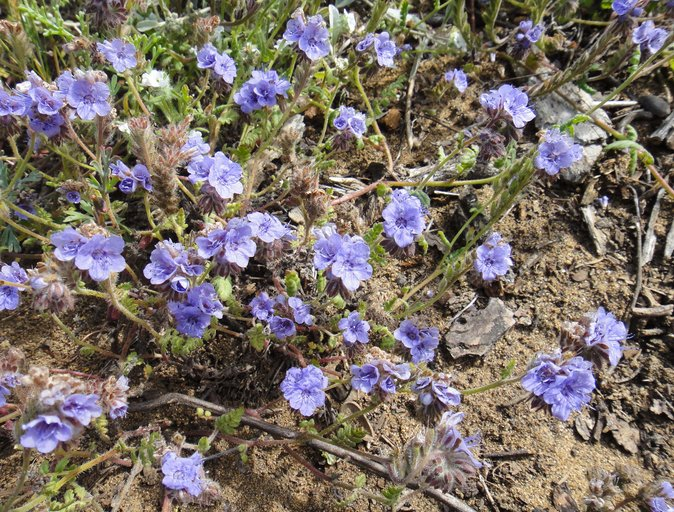
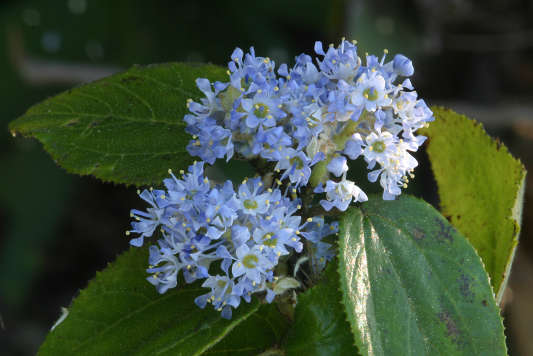
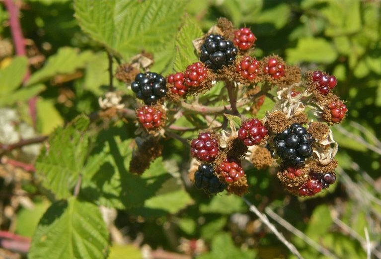
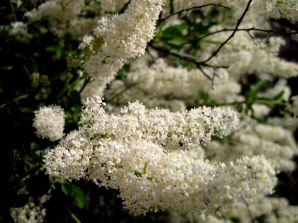

Full Sun Plants
Wild Heliotrope

Copyright © 2011 Neal KramerSun: Full Sun
Water needs: Very Low
Care level: Moderate
Scientific name: Phacelia distans
Family: Hydrophyllaceae
Genus: Phacelia
Hairy Ceanothus

Copyright © 2006 Steve MatsonSun: Full Sun, Partial Sun
Water needs: Very Low
Care level: Moderate
Scientific name: Ceanothus oliganthus var. oliganthus
Family: Rhamnaceae
Genus: Ceanothus
Type: Shrub
California Blackberry

Copyright © 2013 Jean PawekSun: Full Sun, Partial Sun, Full Shade
Water needs: Low, Moderate
Care level: Easy
Scientific name: Rubus ursinus
Family: Rosaceae
Genus: Rubus
Type: Shrub, Vine
Greenbark Ceanothus

© 2010 Calscape. Photo take at Rancho Santa Ana Botanical GardenSun: Full Sun
Water needs: Low, Very Low
Care level: Moderate
Scientific name: Ceanothus spinosus
Family: Rhamnaceae
Genus: Ceanothus
Type: Shrub